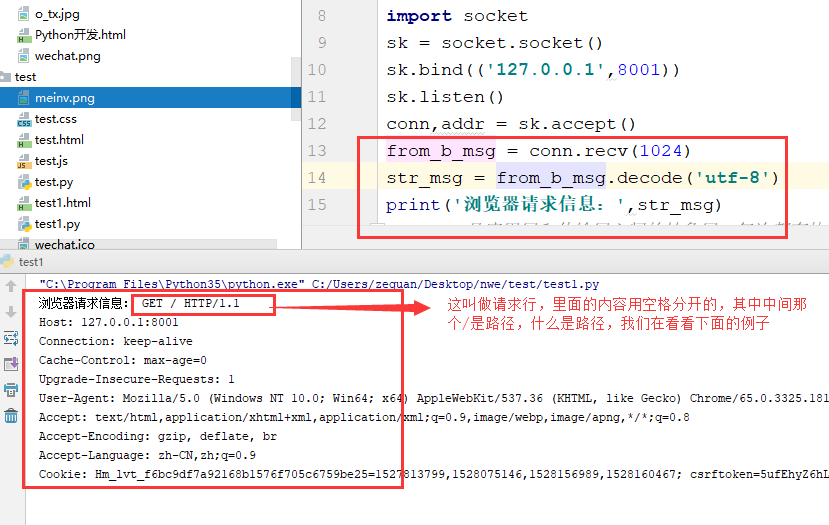
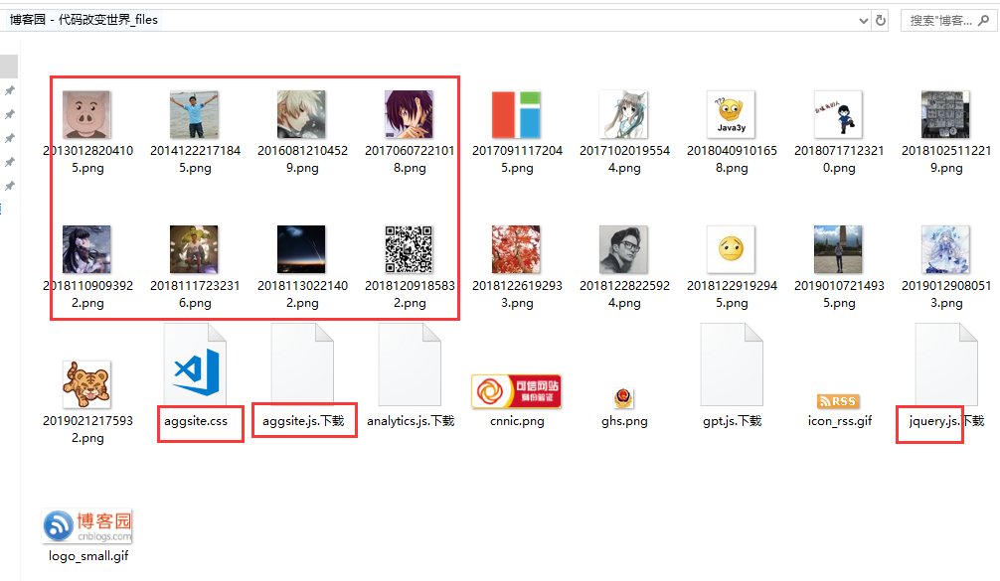
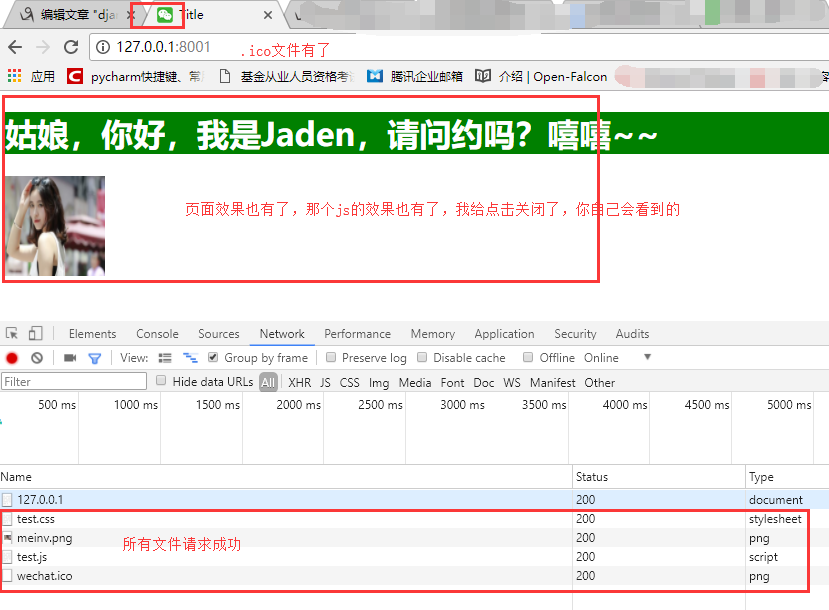
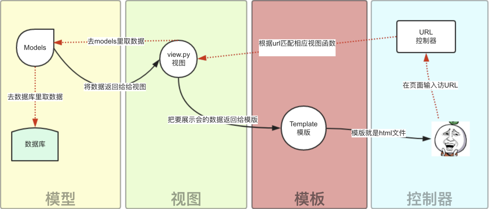
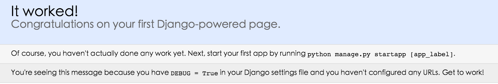
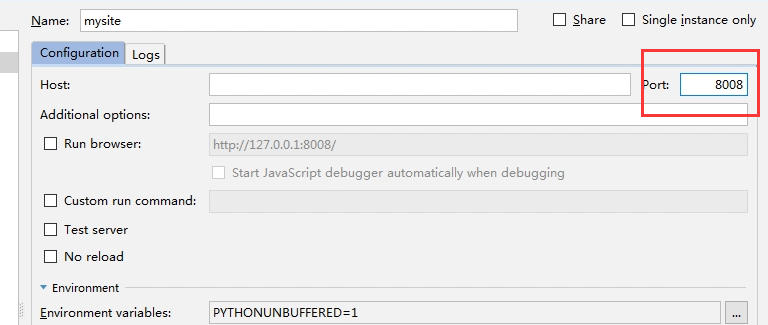

原文连接:https://www.cnblogs.com/fengqiang626/p/11572343.html
目录
1.web框架的本质及自定义web框架
我们可以这样理解：所有的Web应用本质上就是一个socket服务端，而用户的浏览器就是一个socket客户端，基于请求做出响应，客户都先请求，服务端做出对应的响应，按照http协议的请求协议发送请求，服务端按照http协议的响应协议来响应请求，这样的网络通信，我们就可以自己实现Web框架了。
通过对socket的学习，我们知道网络通信，我们完全可以自己写了，因为socket就是做网络通信用的，下面我们就基于socket来自己实现一个web框架，写一个web服务端，让浏览器来请求，并通过自己的服务端把页面返回给浏览器，浏览器渲染出我们想要的效果。
html文件内容如下，名称为test.html：
<!DOCTYPE html>
<html lang="en">
<head>
<meta charset="UTF-8">
<title>Title</title>
<link rel="stylesheet" href="test.css">
<link rel="icon" href="wechat.ico">
<!--直接写在html页面里面的css样式是直接可以在浏览器上显示的-->
<!--<style>-->
<!--h1{-->
<!--background-color: green;-->
<!--color: white;-->
<!--}-->
<!--</style>-->
</head>
<body>
<h1>姑娘，你好，我是Jaden，请问约吗？嘻嘻~~</h1>
<!--直接写在html页面里面的img标签的src属性值如果是别人网站的地址（网络地址）是直接可以在浏览器上显示的-->
<!--<img src="https://timgsa.baidu.com/timg?image&quality=80&size=b9999_10000&sec=1550395461724&di=c2b971db12eef5d85aba410d1e2e8568&imgtype=0&src=http%3A%2F%2Fy0.ifengimg.com%2Fifengimcp%2Fpic%2F20140822%2Fd69e0188b714ee789e97_size87_w800_h1227.jpg" alt="">--> <!--如果都是网络地址，那么只要你的电脑有网，就可以看到，不需要自己在后端写对应的读取文件，返回图片文件信息的代码，因为别人的网站就做了这个事情了-->
<img src="meinv.png" alt="" width="100" height="100"> <!--如果你是本地的图片想要返回给页面，你需要对页面上的关于这个图片的请求要自己做出响应，这个src就是来你本地请求这个图片，你只要将图片信息读取出来，返回给页面，页面拿到这个图片的数据，就能够渲染出来了，是不是很简单-->
<!--直接写在html页面里面的js操作是直接可以在浏览器上显示的-->
<!--<script>-->
<!--alert('这是我们第一个网页')-->
<!--</script>-->
<script src="test.js"></script>
</body>
</html>css文件内容如下，名称为test.css：
h1{
background-color: green;
color: white;
}js文件内容如下，名称为test.js：
alert('这是我们第一个网页');再准备一个图片，名称为meinv.jpg，再准备一个ico文件，名称为wechat.ico，其实就是个图片文件，微信官网打开之后，在浏览器最上面能够看到
，把它保存下来
上面的文件都准备好之后，你用pycharm新建一个项目，把文件都放到一个文件夹里面去，留着备用，像下面这个样子：

2.简单的web框架
创建一个python文件，内容如下，名称为test.py：
import socket
sk = socket.socket()
sk.bind(('127.0.0.1',8001))
sk.listen()
conn,addr = sk.accept()
from_b_msg = conn.recv(1024)
str_msg = from_b_msg.decode('utf-8')
#socket是应用层和传输层之间的抽象层，每次都有协议，协议就是消息格式，那么传输层的消息格式我们不用管，因为socket帮我们搞定了，但是应用层的协议还是需要咱们自己遵守的，所以再给浏览器发送消息的时候，如果没有按照应用层的消息格式来写，那么你返回给浏览器的信息，浏览器是没法识别的。而应用层的协议就是我们的HTTP协议，所以我们按照HTTP协议规定的消息格式来给浏览器返回消息就没有问题了，关于HTTP我们会细说，首先看一下直接写conn.send(b'hello')的效果，然后运行代码，通过浏览器来访问一下，然后再看这一句conn.send(b'HTTP/1.1 200 ok \r\n\r\nhello')的效果
#下面这句就是按照http协议来写的
# conn.send(b'HTTP/1.1 200 ok \r\n\r\nhello')
#上面这句还可以分成下面两句来写
conn.send(b'HTTP/1.1 200 ok \r\n\r\n')
conn.send(b'hello')我们来浏览器上看一下浏览器发送的请求：

目前我们还没有写如何返回一个html文件给浏览器，所以这里暂时不用管它，那么我们点开这个127.0.0.1看看：
我们在python文件中打印一下浏览器发送过来的请求信息是啥：

重启我们的代码，然后在网址中输入这个：
再重启我们的代码，然后在网址中输入这个：

浏览器发过来一堆的消息，我们给浏览器回复(响应)信息的时候，也要按照一个消息格式来写，这些都是http协议规定的，那么我们就来学习一下http协议，然后继续完善我们的web框架：
HTTP协议：https://www.cnblogs.com/fengqiang626/p/11578199.html
3.返回HTML文件的web框架
首先写一个html文件，内容如下，名称为test.html：
<!DOCTYPE html>
<html lang="en">
<head>
<meta charset="UTF-8">
<title>Title</title><link rel="stylesheet" href="test.css">
<!--直接写在html页面里面的css样式是直接可以在浏览器上显示的-->
<style>
h1{
background-color: green;
color: white;
}
</style>
</head>
<body>
<h1>姑娘，你好，我是Jaden，请问约吗？嘻嘻~~</h1>
<!--直接写在html页面里面的img标签的src属性值如果是别人网站的地址（网络地址）是直接可以在浏览器上显示的-->
<img src="https://timgsa.baidu.com/timg?image&quality=80&size=b9999_10000&sec=1550395461724&di=c2b971db12eef5d85aba410d1e2e8568&imgtype=0&src=http%3A%2F%2Fy0.ifengimg.com%2Fifengimcp%2Fpic%2F20140822%2Fd69e0188b714ee789e97_size87_w800_h1227.jpg" alt="">
<!--如果都是网络地址，那么只要你的电脑有网，就可以看到，不需要自己在后端写对应的读取文件，返回图片文件信息的代码，因为别人的网站就做了这个事情了-->
<!--直接写在html页面里面的js操作是直接可以在浏览器上显示的-->
<script>
alert('这是我们第一个网页')
</script>
</body>
</html>准备我们的python代码，服务端程序，文件内容如下，文件名称为test.py：
import socket
sk = socket.socket()
sk.bind(('127.0.0.1',8001))
sk.listen()
conn,addr = sk.accept()
from_b_msg = conn.recv(1024)
str_msg = from_b_msg.decode('utf-8')
print('浏览器请求信息：',str_msg)
# conn.send(b'HTTP/1.1 200 ok \r\ncontent-type:text/html;charset=utf-8;\r\n')
conn.send(b'HTTP/1.1 200 ok \r\n\r\n')
with open('test1.html','rb') as f:
f_data = f.read()
conn.send(f_data)页面上输入网址看效果，css和js代码的效果也有，very good：

但是我们知道，我们的css和js基本都是写在本地的文件里面的啊，而且我们的图片基本也是我们自己本地的啊，怎么办，我们将上面我们提前准备好的js和css还有那个.ico结尾的图片文件都准备好，来我们在来一个升级版的web框架，其实css、js、图片等文件都叫做网站的静态文件。
首先我们先看一个效果，如果我们直接将我们写好的css和js还有.ico和图片文件插入到我们的html页面里面，就是下面这个html文件
名称为test.html，内容如下：
<!DOCTYPE html>
<html lang="en">
<head>
<meta charset="UTF-8">
<title>Title</title>
<link rel="stylesheet" href="test.css">
<!--加上下面这句，那么我们看浏览器调试窗口中的那个network里面就没有那个favicon.ico的请求了，其实这就是页面title标签文字左边的那个页面图标,但是这个文件是我们自己本地的，所以我们需要在后端代码里面将这个文件数据读取出来返回给前端-->
<link rel="icon" href="wechat.ico">
<!--直接写在html页面里面的css样式是直接可以在浏览器上显示的-->
<!--<style>-->
<!--h1{-->
<!--background-color: green;-->
<!--color: white;-->
<!--}-->
<!--</style>-->
</head>
<body>
<h1>姑娘，你好，我是Jaden，请问约吗？嘻嘻~~</h1>
<!--直接写在html页面里面的img标签的src属性值如果是别人网站的地址（网络地址）是直接可以在浏览器上显示的-->
<!--<img src="https://timgsa.baidu.com/timg?image&quality=80&size=b9999_10000&sec=1550395461724&di=c2b971db12eef5d85aba410d1e2e8568&imgtype=0&src=http%3A%2F%2Fy0.ifengimg.com%2Fifengimcp%2Fpic%2F20140822%2Fd69e0188b714ee789e97_size87_w800_h1227.jpg" alt="">--> <!--如果都是网络地址，那么只要你的电脑有网，就可以看到，不需要自己在后端写对应的读取文件，返回图片文件信息的代码，因为别人的网站就做了这个事情了-->
<img src="meinv.png" alt="" width="100" height="100"> <!--如果你是本地的图片想要返回给页面，你需要对页面上的关于这个图片的请求要自己做出响应，这个src就是来你本地请求这个图片，你只要将图片信息读取出来，返回给页面，页面拿到这个图片的数据，就能够渲染出来了，是不是很简单-->
<!--直接写在html页面里面的js操作是直接可以在浏览器上显示的-->
<!--<script>-->
<!--alert('这是我们第一个网页')-->
<!--</script>-->
<script src="test.js"></script>
</body>
</html>同样使用我们之前的python程序，来看效果：

发现js和css的效果都没有出来，并且我们看一下浏览器调试窗口的那个network

在下来我们在network里面点击那个test.css文件，看看请求是什么：

还有就是当我们直接在浏览器上保存某个页面的时候，随便一个页面，我们到页面上点击右键另存为，然后存到本地的一个目录下，你会发现这个页面的html、css、js、图片等文件都跟着保存下来了，我保存了一下博客园首页的页面，看，是一个文件夹和一个html文件：
我们点开博客园那个文件夹看看里面都有什么：

发现js、css还有图片什么的都被保存了下来，说明什么，说明这些文件本身就存在浏览器上了，哦，原来就是将html页面需要的css、js、图片等文件也发送给浏览器就可以了，并且这些静态文件都是浏览器单独过来请求的，其实和标签的属性有有关系，css文件是link标签的href属性：，js文件是script标签的src属性：，图片文件是img标签的src属性： ，那个.ico文件是link标签的属性：，其实这些属性都会在页面加载的时候，单独到自己对应的属性值里面取请求对应的文件数据，而且我们如果在值里面写的都是自己本地的路径，那么都会来自己的本地路径来找，如果我们写的是相对路径，就会到我们自己的网址+文件名称，这个路径来找它需要的文件，所以我们只需要将这些请求做一些响应，将对应的文件数据相应给浏览器就可以了！并且我们通过前面的查看，能够发现，浏览器url的请求路径我们知道是什么，静态文件不是也这样请求的吗，好，我们针对不同的路径给它返回不同的文件，
，那个.ico文件是link标签的属性：，其实这些属性都会在页面加载的时候，单独到自己对应的属性值里面取请求对应的文件数据，而且我们如果在值里面写的都是自己本地的路径，那么都会来自己的本地路径来找，如果我们写的是相对路径，就会到我们自己的网址+文件名称，这个路径来找它需要的文件，所以我们只需要将这些请求做一些响应，将对应的文件数据相应给浏览器就可以了！并且我们通过前面的查看，能够发现，浏览器url的请求路径我们知道是什么，静态文件不是也这样请求的吗，好，我们针对不同的路径给它返回不同的文件，
非常好！我们来尝试一下！
4.返回静态文件的高级web框架
还是用第二个web框架里面的那个html文件，我们只需要写一些我们的服务端程序就可以了，同样是test.py文件，内容如下：
import socket
sk = socket.socket()
sk.bind(('127.0.0.1',8001))
sk.listen()
#首先浏览器相当于给我们发送了多个请求，一个是请求我们的html文件，而我们的html文件里面的引入文件的标签又给我们这个网站发送了请求静态文件的请求，所以我们要将建立连接的过程循环起来，才能接受多个请求，没毛病
while 1:
conn,addr = sk.accept()
# while 1:
from_b_msg = conn.recv(1024)
str_msg = from_b_msg.decode('utf-8')
#通过http协议我们知道，浏览器请求的时候，有一个请求内容的路径，通过对请求信息的分析，这个路径我们在请求的所有请求信息中可以提炼出来，下面的path就是我们提炼出来的路径
path = str_msg.split('\r\n')[0].split(' ')[1]
print('path>>>',path)
conn.send(b'HTTP/1.1 200 ok \r\n\r\n')
#由于整个页面需要html、css、js、图片等一系列的文件，所以我们都需要给人家浏览器发送过去，浏览器才能有这些文件，才能很好的渲染你的页面
#根据不同的路径来返回响应的内容
if path == '/': #返回html文件
print(from_b_msg)
with open('test.html','rb') as f:
# with open('Python开发.html','rb') as f:
data = f.read()
conn.send(data)
conn.close()
elif path == '/meinv.png': #返回图片
with open('meinv.png','rb') as f:
pic_data = f.read()
# conn.send(b'HTTP/1.1 200 ok \r\n\r\n')
conn.send(pic_data)
conn.close()
elif path == '/test.css': #返回css文件
with open('test.css','rb') as f:
css_data = f.read()
conn.send(css_data)
conn.close()
elif path == '/wechat.ico':#返回页面的ico图标
with open('wechat.ico','rb') as f:
ico_data = f.read()
conn.send(ico_data)
conn.close()
elif path == '/test.js': #返回js文件
with open('test.js','rb') as f:
js_data = f.read()
conn.send(js_data)
conn.close()
#注意：上面每一个请求处理完之后，都有一个conn.close()是因为，HTTP协议是短链接的，一次请求对应一次响应，这个请求就结束了，所以我们需要写上close，不然浏览器自己断了，你自己写的服务端没有断，就会出问题。运行起来我们的py文件，然后在浏览器访问一下我们的服务端，看效果：

5.函数版高级web框架
html文件和其他的静态文件还是我们上面使用的
python代码如下：
#!/usr/bin/env python
# -*- coding:utf-8 -*-
# @Time : 2019/2/17 14:06
# @Author : wuchao
# @Site :
# @File : test.py
# @Software: PyCharm
import socket
sk = socket.socket()
sk.bind(('127.0.0.1',8001))
sk.listen()
#处理页面请求的函数
def func1(conn):
with open('test.html', 'rb') as f:
# with open('Python开发.html','rb') as f:
data = f.read()
conn.send(data)
conn.close()
#处理页面img标签src属性值是本地路径的时候的请求
def func2(conn):
with open('meinv.png', 'rb') as f:
pic_data = f.read()
# conn.send(b'HTTP/1.1 200 ok \r\n\r\n')
conn.send(pic_data)
conn.close()
#处理页面link（ <link rel="stylesheet" href="test.css">）标签href属性值是本地路径的时候的请求
def func3(conn):
with open('test.css', 'rb') as f:
css_data = f.read()
conn.send(css_data)
conn.close()
#处理页面link（<link rel="icon" href="wechat.ico">）标签href属性值是本地路径的时候的请求
def func4(conn):
with open('wechat.ico', 'rb') as f:
ico_data = f.read()
conn.send(ico_data)
conn.close()
#处理页面script（<script src="test.js"></script>）标签src属性值是本地路径的时候的请求
def func5(conn):
with open('test.js', 'rb') as f:
js_data = f.read()
conn.send(js_data)
conn.close()
while 1:
conn,addr = sk.accept()
# while 1:
from_b_msg = conn.recv(1024)
str_msg = from_b_msg.decode('utf-8')
path = str_msg.split('\r\n')[0].split(' ')[1]
print('path>>>',path)
conn.send(b'HTTP/1.1 200 ok \r\n\r\n')
print(from_b_msg)
if path == '/':
func1(conn)
elif path == '/meinv.png':
func2(conn)
elif path == '/test.css':
func3(conn)
elif path == '/wechat.ico':
func4(conn)
elif path == '/test.js':
func5(conn)
6.更高级版(多线程版)web框架
应用上我们并发编程的内容，反正html文件和静态文件都直接给浏览器，那大家就一块并发处理，html文件和静态文件还是上面的
python代码如下：
#!/usr/bin/env python
# -*- coding:utf-8 -*-
# @Time : 2019/2/17 14:06
# @Author : wuchao
# @Site :
# @File : test.py
# @Software: PyCharm
import socket
from threading import Thread
#注意一点，不开多线程完全是可以搞定的，在这里只是教大家要有并发编程的思想，所以我使用了多线程
sk = socket.socket()
sk.bind(('127.0.0.1',8001))
sk.listen()
def func1(conn):
with open('test.html', 'rb') as f:
# with open('Python开发.html','rb') as f:
data = f.read()
conn.send(data)
conn.close()
def func2(conn):
with open('meinv.png', 'rb') as f:
pic_data = f.read()
# conn.send(b'HTTP/1.1 200 ok \r\n\r\n')
conn.send(pic_data)
conn.close()
def func3(conn):
with open('test.css', 'rb') as f:
css_data = f.read()
conn.send(css_data)
conn.close()
def func4(conn):
with open('wechat.ico', 'rb') as f:
ico_data = f.read()
conn.send(ico_data)
conn.close()
def func5(conn):
with open('test.js', 'rb') as f:
js_data = f.read()
conn.send(js_data)
conn.close()
while 1:
conn,addr = sk.accept()
# while 1:
from_b_msg = conn.recv(1024)
str_msg = from_b_msg.decode('utf-8')
path = str_msg.split('\r\n')[0].split(' ')[1]
print('path>>>',path)
conn.send(b'HTTP/1.1 200 ok \r\n\r\n')
print(from_b_msg)
if path == '/':
# func1(conn)
t = Thread(target=func1,args=(conn,))
t.start()
elif path == '/meinv.png':
# func2(conn)
t = Thread(target=func2, args=(conn,))
t.start()
elif path == '/test.css':
# func3(conn)
t = Thread(target=func3, args=(conn,))
t.start()
elif path == '/wechat.ico':
# func4(conn)
t = Thread(target=func4, args=(conn,))
t.start()
elif path == '/test.js':
# func5(conn)
t = Thread(target=func5, args=(conn,))
t.start()
7.更更高级版web框架
if判断太多了，开线程的方式也比较恶心，有多少个if判断，就写多少次创建线程，简化一下：
import socket
from threading import Thread
sk = socket.socket()
sk.bind(('127.0.0.1',8001))
sk.listen()
def func1(conn):
conn.send(b'HTTP/1.1 200 ok\r\ncontent-type:text/html\r\ncharset:utf-8\r\n\r\n')
with open('test.html', 'rb') as f:
# with open('Python开发.html','rb') as f:
data = f.read()
conn.send(data)
conn.close()
def func2(conn):
conn.send(b'HTTP/1.1 200 ok\r\n\r\n')
with open('meinv.png', 'rb') as f:
pic_data = f.read()
# conn.send(b'HTTP/1.1 200 ok \r\n\r\n')
conn.send(pic_data)
conn.close()
def func3(conn):
conn.send(b'HTTP/1.1 200 ok\r\n\r\n')
with open('test.css', 'rb') as f:
css_data = f.read()
conn.send(css_data)
conn.close()
def func4(conn):
conn.send(b'HTTP/1.1 200 ok\r\n\r\n')
with open('wechat.ico', 'rb') as f:
ico_data = f.read()
conn.send(ico_data)
conn.close()
def func5(conn):
conn.send(b'HTTP/1.1 200 ok\r\n\r\n')
with open('test.js', 'rb') as f:
js_data = f.read()
conn.send(js_data)
conn.close()
#定义一个路径和执行函数的对应关系，不再写一堆的if判断了
l1 = [
('/',func1),
('/meinv.png',func2),
('/test.css',func3),
('/wechat.ico',func4),
('/test.js',func5),
]
#遍历路径和函数的对应关系列表，并开多线程高效的去执行路径对应的函数，
def fun(path,conn):
for i in l1:
if i[0] == path:
t = Thread(target=i[1],args=(conn,))
t.start()
# else:
# conn.send(b'sorry')
while 1:
conn,addr = sk.accept()
#看完这里面的代码之后，你就可以思考一个问题了，很多人要同时访问你的网站，你在请求这里是不是可以开起并发编程的思想了，多进程+多线程+协程，妥妥的支持高并发，再配合服务器集群，这个网页就支持大量的高并发了，有没有很激动，哈哈，但是咱们写的太low了，而且功能很差，容错能力也很差，当然了，如果你有能力，你现在完全可以自己写web框架了，写一个nb的，如果现在没有这个能力，那么我们就来好好学学别人写好的框架把，首先第一个就是咱们的django框架了，其实就是将这些功能封装起来，并且容错能力强，抗压能力强，总之一个字：吊。
# while 1:
from_b_msg = conn.recv(1024)
str_msg = from_b_msg.decode('utf-8')
path = str_msg.split('\r\n')[0].split(' ')[1]
print('path>>>',path)
# 注意：因为开启的线程很快，可能导致你的文件还没有发送过去，其他文件的请求已经来了，导致你文件信息没有被浏览器正确的认识，所以需要将发送请求行和请求头的部分写道前面的每一个函数里面去，并且防止出现浏览器可能不能识别你的html文件的情况，需要在发送html文件的那个函数里面的发送请求行和请求头的部分加上两个请求头content-type:text/html\r\ncharset:utf-8\r\n
# conn.send(b'HTTP/1.1 200 ok\r\n\r\n') 不这样写了
# conn.send(b'HTTP/1.1 200 ok\r\ncontent-type:text/html\r\ncharset:utf-8\r\n\r\n') 不这样写了
print(from_b_msg)
#执行这个fun函数并将路径和conn管道都作为参数传给他
fun(path,conn)
8.根据不同路径返回不同页面的web框架
既然知道了我们可以根据不同的请求路径来返回不同的内容，那么我们可不可以根据用户访问的不同路径，返回不同的页面啊，嗯，应该是可以的
自己创建两个html文件，写几个标签在里面，名为index.html和home.html，然后根据不同的路径返回不同的页面，我就给大家写上python代码吧：
"""
根据URL中不同的路径返回不同的内容
返回独立的HTML页面
"""
import socket
sk = socket.socket()
sk.bind(("127.0.0.1", 8080)) # 绑定IP和端口
sk.listen() # 监听
# 将返回不同的内容部分封装成函数
def index(url):
# 读取index.html页面的内容
with open("index.html", "r", encoding="utf8") as f:
s = f.read()
# 返回字节数据
return bytes(s, encoding="utf8")
def home(url):
with open("home.html", "r", encoding="utf8") as f:
s = f.read()
return bytes(s, encoding="utf8")
# 定义一个url和实际要执行的函数的对应关系
list1 = [
("/index/", index),
("/home/", home),
]
while 1:
# 等待连接
conn, add = sk.accept()
data = conn.recv(8096) # 接收客户端发来的消息
# 从data中取到路径
data = str(data, encoding="utf8") # 把收到的字节类型的数据转换成字符串
# 按\r\n分割
data1 = data.split("\r\n")[0]
url = data1.split()[1] # url是我们从浏览器发过来的消息中分离出的访问路径
conn.send(b'HTTP/1.1 200 OK\r\n\r\n') # 因为要遵循HTTP协议，所以回复的消息也要加状态行
# 根据不同的路径返回不同内容
func = None # 定义一个保存将要执行的函数名的变量
for i in list1:
if i[0] == url:
func = i[1]
break
if func:
response = func(url)
else:
response = b"404 not found!"
# 返回具体的响应消息
conn.send(response)
conn.close()
9.返回动态页面的web框架
这网页能够显示出来了，但是都是静态的啊。页面的内容都不会变化的，我想要的是动态网站，动态网站的意思是里面有动态变化的数据，而不是页面里面有动态效果，这个大家要注意啊。
没问题，我也有办法解决。我选择使用字符串替换来实现这个需求。（这里使用时间戳来模拟动态的数据，还是只给大家python代码吧）
"""
根据URL中不同的路径返回不同的内容
返回HTML页面
让网页动态起来
"""
import socket
import time
sk = socket.socket()
sk.bind(("127.0.0.1", 8080)) # 绑定IP和端口
sk.listen() # 监听
# 将返回不同的内容部分封装成函数
def index(url):
with open("index.html", "r", encoding="utf8") as f:
s = f.read()
now = str(time.time())
s = s.replace("@@oo@@", now) # 在网页中定义好特殊符号，用动态的数据去替换提前定义好的特殊符号
return bytes(s, encoding="utf8")
def home(url):
with open("home.html", "r", encoding="utf8") as f:
s = f.read()
return bytes(s, encoding="utf8")
# 定义一个url和实际要执行的函数的对应关系
list1 = [
("/index/", index),
("/home/", home),
]
while 1:
# 等待连接
conn, add = sk.accept()
data = conn.recv(8096) # 接收客户端发来的消息
# 从data中取到路径
data = str(data, encoding="utf8") # 把收到的字节类型的数据转换成字符串
# 按\r\n分割
data1 = data.split("\r\n")[0]
url = data1.split()[1] # url是我们从浏览器发过来的消息中分离出的访问路径
conn.send(b'HTTP/1.1 200 OK\r\n\r\n') # 因为要遵循HTTP协议，所以回复的消息也要加状态行
# 根据不同的路径返回不同内容
func = None # 定义一个保存将要执行的函数名的变量
for i in list1:
if i[0] == url:
func = i[1]
break
if func:
response = func(url)
else:
response = b"404 not found!"
# 返回具体的响应消息
conn.send(response)
conn.close()
这八个框架让大家满意了吧，这下子明白整个web框架的原理了吧，哈哈，但是我们写的框架还是太low了，不够强壮，那别人已经开发好了很多nb的框架了，如：Django、Flask、Tornado等等，我们学学怎么用就可以啦，但是注意一个问题，我们在里面获取路径的时候，我们是按照\r\n来分割然后再通过空格来分割获取到的路径，但是如果不是http协议的话，你自己要注意消息格式了。
接下来我们看一个别人写好的模块来搞的web框架，这个模块叫做wsgiref
10.wsgiref模块版web框架
wsgiref模块其实就是将整个请求信息给封装了起来，就不需要你自己处理了，假如它将所有请求信息封装成了一个叫做request的对象，那么你直接request.path就能获取到用户这次请求的路径，request.method就能获取到本次用户请求的请求方式(get还是post)等，那这个模块用起来，我们再写web框架是不是就简单了好多啊。
对于真实开发中的python web程序来说，一般会分为两部分：服务器程序和应用程序。
服务器程序负责对socket服务器进行封装，并在请求到来时，对请求的各种数据进行整理。
应用程序则负责具体的逻辑处理。为了方便应用程序的开发，就出现了众多的Web框架，例如：Django、Flask、web.py 等。不同的框架有不同的开发方式，但是无论如何，开发出的应用程序都要和服务器程序配合，才能为用户提供服务。
这样，服务器程序就需要为不同的框架提供不同的支持。这样混乱的局面无论对于服务器还是框架，都是不好的。对服务器来说，需要支持各种不同框架，对框架来说，只有支持它的服务器才能被开发出的应用使用。最简单的Web应用就是先把HTML用文件保存好，用一个现成的HTTP服务器软件，接收用户请求，从文件中读取HTML，返回。如果要动态生成HTML，就需要把上述步骤自己来实现。不过，接受HTTP请求、解析HTTP请求、发送HTTP响应都是苦力活，如果我们自己来写这些底层代码，还没开始写动态HTML呢，就得花个把月去读HTTP规范。
正确的做法是底层代码由专门的服务器软件实现，我们用Python专注于生成HTML文档。因为我们不希望接触到TCP连接、HTTP原始请求和响应格式，所以，需要一个统一的接口协议来实现这样的服务器软件，让我们专心用Python编写Web业务。
这时候，标准化就变得尤为重要。我们可以设立一个标准，只要服务器程序支持这个标准，框架也支持这个标准，那么他们就可以配合使用。一旦标准确定，双方各自实现。这样，服务器可以支持更多支持标准的框架，框架也可以使用更多支持标准的服务器。
WSGI（Web Server Gateway Interface）就是一种规范，它定义了使用Python编写的web应用程序与web服务器程序之间的接口格式，实现web应用程序与web服务器程序间的解耦。
常用的WSGI服务器有uwsgi、Gunicorn。而Python标准库提供的独立WSGI服务器叫wsgiref，Django开发环境用的就是这个模块来做服务器。
wsfiref使用
from wsgiref.simple_server import make_server
# wsgiref本身就是个web框架，提供了一些固定的功能（请求和响应信息的封装，不需要我们自己写原生的socket了也不需要咱们自己来完成请求信息的提取了，提取起来很方便）
#函数名字随便起
def application(environ, start_response):
'''
:param environ: 是全部加工好的请求信息，加工成了一个字典，通过字典取值的方式就能拿到很多你想要拿到的信息
:param start_response: 帮你封装响应信息的（响应行和响应头），注意下面的参数
:return:
'''
start_response('200 OK', [('Content-Type', 'text/html'),('k1','v1')])
print(environ)
print(environ['PATH_INFO']) #输入地址127.0.0.1:8000，这个打印的是'/',输入的是127.0.0.1:8000/index，打印结果是'/index'
return [b'<h1>Hello, web!</h1>']
#和咱们学的socketserver那个模块很像啊
httpd = make_server('127.0.0.1', 8080, application)
print('Serving HTTP on port 8080...')
# 开始监听HTTP请求:
httpd.serve_forever()
来一个完整的web项目，用户登录认证的项目，我们需要连接数据库了，所以先到mysql数据库里面准备一些表和数据
mysql> create database db1;
Query OK, 1 row affected (0.00 sec)
mysql> use db1;
Database changed
mysql> create table userinfo(id int primary key auto_increment,username char(20) not null unique,password char(20) not null);
Query OK, 0 rows affected (0.23 sec)
mysql> insert into userinfo(username,password) values('chao','666'),('sb1','222');
Query OK, 2 rows affected (0.03 sec)
Records: 2 Duplicates: 0 Warnings: 0
mysql> select * from userinfo;
+----+----------+----------+
| id | username | password |
+----+----------+----------+
| 1 | chao | 666 |
| 2 | sb1 | 222 |
+----+----------+----------+
2 rows in set (0.00 sec)
然后再创建这么几个文件：
python文件名称webmodel.py
#创建表，插入数据
def createtable():
import pymysql
conn = pymysql.connect(
host='127.0.0.1',
port=3306,
user='root',
password='666',
database='db1',
charset='utf8'
)
cursor = conn.cursor(pymysql.cursors.DictCursor)
sql = '''
-- 创建表
create table userinfo(id int primary key auto_increment,username char(20) not null unique,password char(20) not null);
-- 插入数据
insert into userinfo(username,password) values('chao','666'),('sb1','222');
'''
cursor.execute(sql)
conn.commit()
cursor.close()
conn.close()
python的名为webauth文件
#对用户名和密码进行验证
def auth(username,password):
import pymysql
conn = pymysql.connect(
host='127.0.0.1',
port=3306,
user='root',
password='123',
database='db1',
charset='utf8'
)
print('userinfo',username,password)
cursor = conn.cursor(pymysql.cursors.DictCursor)
sql = 'select * from userinfo where username=%s and password=%s;'
res = cursor.execute(sql, [username, password])
if res:
return True
else:
return False
用户输入用户名和密码的文件，名为web.html
<!DOCTYPE html>
<html lang="en">
<head>
<meta charset="UTF-8">
<title>Title</title>
</head>
<body>
<!--如果form表单里面的action什么值也没给，默认是往当前页面的url上提交你的数据，所以我们可以自己指定数据的提交路径-->
<!--<form action="http://127.0.0.1:8080/auth/" method="post">-->
<form action="http://127.0.0.1:8080/auth/" method="get">
用户名<input type="text" name="username">
密码 <input type="password" name="password">
<input type="submit">
</form>
<script>
</script>
</body>
</html>
用户验证成功后跳转的页面，显示成功，名为websuccess.html
<!DOCTYPE html>
<html lang="en">
<head>
<meta charset="UTF-8">
<title>Title</title>
<style>
h1{
color:red;
}
</style>
</head>
<body>
<h1>宝贝儿，恭喜你登陆成功啦</h1>
</body>
</html>
python服务端代码(主逻辑代码)，名为web_python.py
from urllib.parse import parse_qs
from wsgiref.simple_server import make_server
import webauth
def application(environ, start_response):
# start_response('200 OK', [('Content-Type', 'text/html'),('k1','v1')])
# start_response('200 OK', [('Content-Type', 'text/html'),('charset','utf-8')])
start_response('200 OK', [('Content-Type', 'text/html')])
print(environ)
print(environ['PATH_INFO'])
path = environ['PATH_INFO']
#用户获取login页面的请求路径
if path == '/login':
with open('web.html','rb') as f:
data = f.read()
#针对form表单提交的auth路径，进行对应的逻辑处理
elif path == '/auth/':
#登陆认证
#1.获取用户输入的用户名和密码
#2.去数据库做数据的校验，查看用户提交的是否合法
# user_information = environ['']
if environ.get("REQUEST_METHOD") == "POST":
#获取请求体数据的长度,因为提交过来的数据需要用它来提取,注意POST请求和GET请求的获取数据的方式不同
try:
request_body_size = int(environ.get('CONTENT_LENGTH', 0))
except (ValueError):
request_body_size = 0
#POST请求获取数据的方式
request_data = environ['wsgi.input'].read(request_body_size)
print('>>>>>',request_data) # >>>>> b'username=chao&password=123'，是个bytes类型数据
print('?????',environ['QUERY_STRING']) #????? 空的，因为post请求只能按照上面这种方式取数据
#parse_qs可以帮我们解析数据
re_data = parse_qs(request_data)
print('拆解后的数据',re_data) #拆解后的数据 {b'password': [b'123'], b'username': [b'chao']} #post请求的返回数据我就不写啦 pass
if environ.get("REQUEST_METHOD") == "GET":
#GET请求获取数据的方式，只能按照这种方式取
print('?????',environ['QUERY_STRING']) #????? username=chao&password=123,是个字符串类型数据
request_data = environ['QUERY_STRING']
# parse_qs可以帮我们解析数据
re_data = parse_qs(request_data)
print('拆解后的数据', re_data) #拆解后的数据 {'password': ['123'], 'username': ['chao']}
username = re_data['username'][0]
password = re_data['password'][0]
print(username,password)
#进行验证：
status = webauth.auth(username,password)
if status:
# 3.将相应内容返回
with open('websuccess.html','rb') as f:
data = f.read()
else:
data = b'auth error'
# 但是不管是post还是get请求都不能直接拿到数据，拿到的数据还需要我们来进行分解提取，所以我们引入urllib模块来帮我们分解
#注意昂，我们如果直接返回中文，没有给浏览器指定编码格式，默认是gbk，所以我们需要gbk来编码一下，浏览器才能识别
# data='登陆成功！'.encode('gbk')
else:
data = b'sorry 404!,not found the page'
return [data]
#和咱们学的socketserver那个模块很像啊
httpd = make_server('127.0.0.1', 8080, application)
print('Serving HTTP on port 8080...')
# 开始监听HTTP请求:
httpd.serve_forever()
创建文件，放到同一个目录下，运行一下we_python.py文件的代码就能看到效果，注意先输入的网址是127.0.0.1:8080/login ，还要注意你的mysql数据库没有问题
11.起飞版web框架
我们上一个web框架把所有的代码都写在了一个py文件中，我们拆到其他文件里面去，并且针对不用的路径来进行分发请求的时候都用的if判断，很多值得优化的地方，好，结合我们前面几个版本的优势我们来优化一下，分几个文件和文件夹
代码就不在博客上都列出来了，我打包放到百度云上了，大家去下载看看把：https://pan.baidu.com/s/1Ns5QHFpZGusGHuHzrCto3A
12.MVC和MTV框架
12.1MVC
Web服务器开发领域里著名的MVC模式，所谓MVC就是把Web应用分为模型(M)，控制器(C)和视图(V)三层，他们之间以一种插件式的、松耦合的方式连接在一起，模型负责业务对象与数据库的映射(ORM)，视图负责与用户的交互(页面)，控制器接受用户的输入调用模型和视图完成用户的请求，其示意图如下所示：

12.2MTV
Django的MTV模式本质上和MVC是一样的，也是为了各组件间保持松耦合关系，只是定义上有些许不同，Django的MTV分别是值：
- M 代表模型（Model）： 负责业务对象和数据库的关系映射(ORM)。
- T 代表模板 (Template)：负责如何把页面展示给用户(html)。
- V 代表视图（View）： 负责业务逻辑，并在适当时候调用Model和Template。
除了以上三层之外，还需要一个URL分发器，它的作用是将一个个URL的页面请求分发给不同的View处理，View再调用相应的Model和Template，MTV的响应模式如下所示：

一般是用户通过浏览器向我们的服务器发起一个请求(request)，这个请求回去访问视图函数，（如果不涉及到数据调用，那么这个时候视图函数返回一个模板也就是一个网页给用户），视图函数调用模型，模型去数据库查找数据，然后逐级返回，视图函数把返回的数据填充到模板中空格中，最后返回网页给用户。
13.Django下载安装
13.1下载Django：
pip3 install django==1.11.9
13.2创建一个django project
django-admin startproject mysite 创建了一个名为"mysite"的Django 项目：
当前目录下会生成mysite的工程，目录结构如下：（大家注意昂，pip下载下来的django你就理解成一个模块，而不是django项目，这个模块可以帮我们创建django项目）

- manage.py ----- Django项目里面的工具，通过它可以调用django shell和数据库，启动关闭项目与项目交互等，不管你将框架分了几个文件，必然有一个启动文件，其实他们本身就是一个文件。
- settings.py ---- 包含了项目的默认设置，包括数据库信息，调试标志以及其他一些工作的变量。
- urls.py ----- 负责把URL模式映射到应用程序。
- wsgi.py ---- runserver命令就使用wsgiref模块做简单的web server，后面会看到renserver命令，所有与socket相关的内容都在这个文件里面了，目前不需要关注它。
python manage.py runserver 127.0.0.1:8080 #此时已经可以启动django项目了，只不过什么逻辑也没有呢你会发现，上面没有什么view视图函数的文件啊，这里我们说一个应用与项目的关系，上面我们只是创建了一个项目，并没有创建应用，以微信来举例，微信是不是一个大的项目，但是微信里面是不是有很多个应用，支付应用、聊天应用、朋友圈、小程序等这些在一定程度上都是相互独立的应用，也就是说一个大的项目里面可以有多个应用，也就是说项目是包含应用的，它没有将view放到这个项目目录里面是因为它觉得，一个项目里面可以有多个应用，而每个应用都有自己这个应用的逻辑内容，所以他觉得这个view应该放到应用里面，比如说我们的微信，刚才说了几个应用，这几个应用的逻辑能放到一起吗，放到一起是不是就乱套啦，也不好管理和维护，所以这些应用的逻辑都分开来放，它就帮我们提炼出来了，提炼出来一个叫做应用的东西，所以我们需要来创建这个应用。
13.3在mysite目录下创建应用
python manage.py startapp blog #通过执行manage.py文件来创建应用，执行这句话一定要注意，你应该在这个manage.py的文件所在目录下执行这句话，因为其他目录里面没有这个文件python manage.py startapp blog2 #每个应用都有自己的目录，每个应用的目录下都有自己的views.py视图函数和models.py数据库操作相关的文件

我们现在只需要看其中两个文件
models.py ：之前我们写的那个名为model的文件就是创建表用的，这个文件就是存放与该app(应用)相关的表结构的
views.py ：存放与该app相关的视图函数的
13.4启动django项目
python manage.py runserver ``8080 #python manage.py runserver 127.0.0.1:8080，本机就不用写ip地址了 如果连端口都没写，默认是本机的8000端口
这样我们的django就启动起来了！当我们访问：http://127.0.0.1:8080/时就可以看到：

学习Django，我们就学上面的这些文件，怎么在MTV+url分发的功能下来使用。
最后我们说一下，其实我们将来创建django项目，很少用命令行了，就用pycharm来创建，怎么创建呢？看图：
看项目目录：
14.基于Django实现一个简单的示例
现在实现一个用户输入一个timer路径，返回一个含有当前时间的页面，想想怎么做？用户输入网址-->路径-->函数-->返回数据(文件)
url控制器（第一步就找它）
django 1.11.9版本的url写法：from django.conf.urls import urlfrom django.contrib import adminfrom crm import viewsurlpatterns = [ url(r'^admin/', admin.site.urls), url(r'^index/', views.index),]
下面是django2.x版本的url写法，不太一样了，但是兼容1.x的，不过我们现在还是主要说1.xx版本的，所以写url的时候按照上的方式写。from django.contrib import admin
from django.urls import path
#找对应的函数，是哪个app里面的函数
from app01 import views
urlpatterns = [
path('admin/', admin.site.urls), #这个先不用管，后面会学
path('index/',views.index),
]视图
from django.shortcuts import render,HttpResponse
# Create your views here.
#逻辑和返回数据
def index(request):
import datetime
now=datetime.datetime.now()
ctime=now.strftime("%Y-%m-%d %X")
#return HttpResponse('哈哈，好玩吗？')
return render(request,"index.html",{"ctime":ctime}) #render，渲染html页面文件并返回给浏览器模板
<!DOCTYPE html>
<html lang="en">
<head>
<meta charset="UTF-8">
<title>Title</title>
</head>
<body>
<h4>当前时间:{{ ctime }}</h4>
</body>
</html>通过pycharm来运行项目：
看控制台：
执行效果如下：
有同学说：我想自己配置启动的端口怎么搞啊：

还有一点说一下昂，在settings配置文件里面有关于templates(放html文件的配置)：
TEMPLATES = [
{
'BACKEND': 'django.template.backends.django.DjangoTemplates',
'DIRS': [os.path.join(BASE_DIR, 'templates')] #有些版本的django没有写这个，自己写一下，就是配置一个django找html文件的路径，render方法就来这里找html文件
,
'APP_DIRS': True,
'OPTIONS': {
'context_processors': [
'django.template.context_processors.debug',
'django.template.context_processors.request',
'django.contrib.auth.context_processors.auth',
'django.contrib.messages.context_processors.messages',
],
},
},
]关于请求和响应的请求信息和相应信息的设置还需要你自己写吗？之前我们用wsgiref是不是还写来着，现在都不需要写了，简单不。
还有一点：post请求的时候你会发现一个 Forbidden的错误：
现在只需要做一步，在settings配置文件里面将这一行注释掉，这是django给你加的一个csrf的认证，现在不需要，我们会讲的
MIDDLEWARE = [
'django.middleware.security.SecurityMiddleware',
'django.contrib.sessions.middleware.SessionMiddleware',
'django.middleware.common.CommonMiddleware',
# 'django.middleware.csrf.CsrfViewMiddleware',
'django.contrib.auth.middleware.AuthenticationMiddleware',
'django.contrib.messages.middleware.MessageMiddleware',
'django.middleware.clickjacking.XFrameOptionsMiddleware',
]还记得django写视图函数的时候，有一个参数是必须要给的吗，叫做request，如果你是post请求，那么就用request.POST，就能拿到post请求提交过来的所有数据（一个字典，然后再通过字典取值request.POST.get('username')，取出来的就是个字符串，你在那个字典里面看到的是{'username':['chao']}，虽然看着是列表，但是request.POST.get('username')取出来的就是个字符串），通过request.GET就能拿到提交过来的所有数据，而且记着，每一个视图函数都要给人家返回一些内容，用render或者HttpResponse等，其实render里面也是通过HttpResponse来返回内容，不然会报错，错误是告诉你没有返回任何内容：